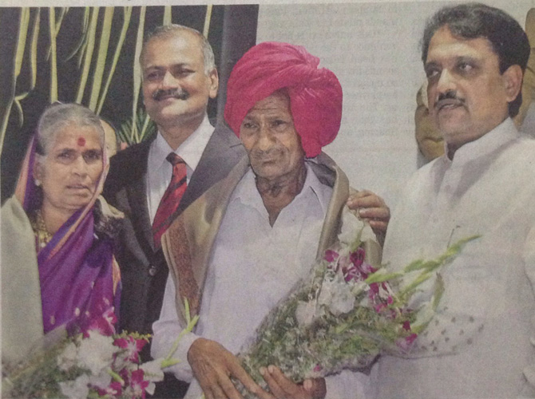

| Welcome to Sir JJ Group of Hospitals |
|---|
| Home | About Us | Department | News | Events | Doctors | Gallery | RTI | Contact |
|---|

Eye surgeon: 1,00,000 not outCM Vilasrao Deshmukh facilitated Tatyarao Lahane on Monday for performing a remarkable hundred thousand contract surgeries in his career spanning 26 years, Born to a poor farmer in Latur, Lahane is now the head of the Department of Ophthalmology at Grant Medical College & Sir JJ Hospital |
|
About JJ Group of Hospitals The Grant Medical College & Sir J.J. Group of Hospitals is a premier Medical Institution of India under Government of Maharashtra. Sir Robert Grant (1780-1838) on becoming Governor of Bombay in August 1834 was deeply touched by the vast number of Indian's who used to die for want of proper medical care. |
Contact Us JJ Group of Hospitals, J J Marg, Nagpada-Mumbai Central, Off Jijabhoy Road, Mumbai - 400008. Phone :+(91)-22-23735555, 23754995, 23739400, 23750102, 23739034, 23739035, 23739040 Fax :+(91)-22-23735599 |
Quock Links Home About Us News Events | Departments Doctors Gallery Contact Us |
Newsletter Sign Up Stay updated with latest news from JJ Group of Hospitals. Name: Email: |